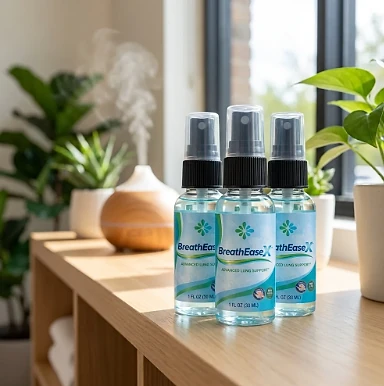
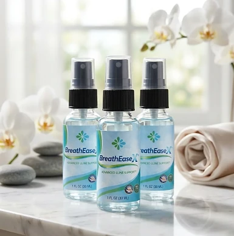

What Is BreathEaseX And How Does It Work?
BreathEaseX is a dietary supplement in oral spray form designed to support healthy breathing, respiratory comfort, and steady daily energy for adults who want to address the shortness of breath, chest heaviness, and fatigue that can make everyday activities harder through a natural, easy-to-use approach — without complicated routines or temporary quick fixes.
It utilizes a simple daily serving of four sprays that combines Manuka Honey MGO-400+, N-Acetylcysteine (NAC), Quercetin, Olive Leaf Extract, Vitamin D3, and L-Theanine to support clear airways, healthy lung function, and a calm, relaxed breathing rhythm, helping the body maintain its natural balance throughout the day.
The ingredients in BreathEaseX are natural compounds that, according to the official website, are combined to support lung health, a healthy inflammatory response, and optimal oxygen flow, particularly for people who prefer one quick daily routine over multiple products or complicated plans.
Rather than acting as a short-lived artificial fix, BreathEaseX focuses on a whole-formula approach, working gradually alongside daily routines to help maintain comfortable breathing, steady energy, and long-term respiratory wellness.
With consistent daily use, the formula is intended to support easier breathing during daily activities, more restful sleep, and more stamina, especially when combined with fresh air, regular movement, and avoiding smoke.
From a practical standpoint, BreathEaseX is a daily respiratory support spray — sprayed directly into the mouth, with no capsules to swallow and no powders to mix.
The official website describes it as a natural, GMO-free formula with no stimulants. It is a dietary supplement, not a medicine, and it does not replace inhalers or any treatment prescribed by a doctor for a respiratory condition.
BreathEaseX Ingredients
According to the official FAQ, every serving of BreathEaseX contains a concentrated blend of six natural compounds. The website does not show the amount of each one (the label image linked on the page was not available when this review was written), so these are the ingredients as the official website lists them:
Manuka Honey MGO-400+: A New Zealand honey graded by its methylglyoxal (MGO) content, long valued for soothing the throat.
N-Acetylcysteine (NAC): A form of the amino acid cysteine that the body uses to make glutathione, known for supporting healthy mucus clearance.
Quercetin: A plant flavonoid with antioxidant properties that supports a healthy inflammatory response.
Olive Leaf Extract: A source of oleuropein, an antioxidant compound that supports overall immune wellness.
Vitamin D3: An essential vitamin that plays a role in normal immune function, including in the respiratory tract.
L-Theanine: An amino acid found in tea that, according to the official website, may help with relaxation and stress regulation, which can make breathing feel calmer.
Together, these compounds are designed to support comfortable breathing, clear airways, and steady energy from within. Each bottle holds 1 fl oz (30 ml), and the official website presents the formula as natural, GMO-free, and free of stimulants.
BreathEaseX is designed for daily use, offering a natural, non-prescription approach to supporting respiratory wellness, without complicated routines or harsh synthetic compounds.
BreathEaseX Side Effects
BreathEaseX is generally considered well tolerated and is designed for adults of different ages and lifestyles who are looking for a natural, balanced approach to respiratory support, especially those who prefer a quick daily spray to support comfortable breathing and steady energy without resorting to harsh stimulants.
According to the official FAQ, the ingredients in BreathEaseX are natural and selected for purity, and the company says it has observed no significant side effects among its customers. The website also describes the formula as GMO-free and free of stimulants.
Even so, a few points are worth knowing. The formula contains Manuka honey, so anyone allergic to honey or bee products should avoid it, and it is not suitable for infants. NAC may interact with some medications, including nitroglycerin and blood thinners, and people with asthma should talk to their doctor before using it. It is not intended to diagnose, treat, cure, or prevent any disease, does not replace inhalers or prescribed treatment, and individual results may vary.
The official FAQ recommends that anyone with an existing medical condition or taking prescription medication consult a doctor before adding BreathEaseX to their routine. Pregnant or nursing women should do the same, ensuring it fits safely within each person's wellness plan.
BreathEaseX Dosage
The recommended BreathEaseX dosage, according to the official FAQ, is four sprays directly into the mouth once per day, and it is designed to fit easily into a daily routine, making consistency simple and convenient. As an oral spray, it requires no capsules to swallow and no drinks to prepare.
The official website explains that spraying it into the mouth allows fast absorption. Choosing the same moment each day, such as in the morning after brushing your teeth, makes the routine easier to remember.
For best results, consistency is key. Each bottle contains 1 fl oz (30 ml), which the official website presents as a 30-day supply, and because respiratory support builds gradually, many customers make it part of an ongoing wellness routine.
There is no need for complex schedules or multi-step routines. A few sprays a day are designed to build lasting support gradually alongside fresh air, regular movement, good hydration, and avoiding smoke and other irritants. Keep the bottle closed, away from heat and direct sunlight, and out of the reach of children.
As with any dietary supplement, it's important not to exceed the recommended dose and to check the label on your bottle. BreathEaseX works best when used regularly, combined with healthy daily habits and the guidance of your healthcare professional.
BreathEaseX – Refund Policy
You can order BreathEaseX with confidence, knowing that every purchase is protected by a 60-day money-back guarantee from the date of purchase. This allows you to try the formula and decide if it delivers the support you expect.
According to the refund policy described in the official FAQ, a return authorization (RMA) must be requested and approved within 60 days of your date of purchase. Return shipping is paid by the customer, and the product must be sent back within 14 days of receiving the RMA, in good physical condition and with all accessories originally included.
How the refund process works: Email customer support to request an RMA, include the RMA number with the returned product, and then email back with the RMA and the tracking number so the return can be followed. Once the return is received, the refund is processed.
Customer Support Contact Information: contact.lr@gethemoflow.com, the email listed on the official website for return requests.
Refund Processing Time: The official website does not state how long refunds take to appear. Ask customer support for the expected time when you request your RMA.
This refund policy is designed to give customers a clear path when trying BreathEaseX, and keeping the tracking number of your return makes the process easier.
BreathEaseX Customer Reviews
-
Robert M. — Knoxville, TNVerified Purchase – 6 Bottles
“I smoked for 28 years. After 6 weeks with BreathEaseX, I walked my dog the full loop around the park for the first time in 3 years. My wife cried. I almost did too.”
-
Linda S. — Tampa, FLVerified Purchase – 6 Bottles
“I used to wake up coughing every single morning. By the end of my second bottle, the coughing stopped. I’m sleeping through the night again. My energy is like it was 10 years ago.”
-
Patricia H. — Austin, TXVerified Purchase – 6 Bottles
“I work as a teacher and I was getting winded just walking between classrooms. I started using BreathEaseX and within a month I was back to my morning walks AND keeping up with 30 second-graders. My husband says I snore less too — bonus!”
BreathEaseX – Where To Buy
BreathEaseX is sold through its official website, so if you decide to try it, it's important to be careful about where you purchase it. The official website is the only sales channel the manufacturer lists, and it does not point to marketplaces such as Amazon, eBay, or Walmart.
Listings on third-party platforms may look similar but cannot be verified as authentic, raising concerns about safety, quality, and ingredient freshness. Products purchased outside the official source may not be covered by the 60-day guarantee.
For this reason, it makes sense to purchase BreathEaseX only through the official website. Buying directly from the official source ensures you receive the authentic original product, with access to customer support and the full guarantee. According to the official FAQ, every purchase is a one-time payment, with no auto-ship, recurring charges, or hidden fees.
To avoid counterfeit batches and ensure maximum quality, always verify that you are ordering from the official BreathEaseX website before completing your purchase.
To ensure you’re getting the authentic product, most users choose to visit the official website.
Is BreathEaseX A Scam?
Based on what the official website discloses, BreathEaseX does not appear to be a scam. It is a real oral spray supplement, sold through an established retailer (BuyGoods), and formulated to support healthy breathing and respiratory comfort as part of a consistent routine.
The ingredients used in BreathEaseX — Manuka Honey MGO-400+, N-Acetylcysteine (NAC), Quercetin, Olive Leaf Extract, Vitamin D3, and L-Theanine — are well known in the wellness field. The official website names all of them, although it does not show the amount of each one, and its label image was not loading when this review was written.
The official website also lists a one-time purchase with no hidden autoshipments, a 60-day money-back guarantee, and a support email for returns, with a focus on transparency and customer support. Some links on the page, such as the policy pages, were not working at the time of this review.
The customers quoted on the official website describe walking farther, coughing less in the morning, and having more energy, and the spray offers an easy daily habit, making BreathEaseX a practical option for those seeking natural respiratory support. Results vary from person to person, and no supplement replaces medical care or prescribed treatment.
BreathEaseX is backed by a 60-day guarantee. The return rules, including the RMA and the 14-day window to send the product back, are published in the official FAQ, which underscores the company's transparency with customers.
If you're looking for a simple daily spray to support comfortable breathing and steady energy without complicated routines, BreathEaseX is worth considering — especially when purchased directly from the official website.
For those who want to verify product details or check current availability, the official BreathEaseX website remains the safest option.

Check Availability On Official Website